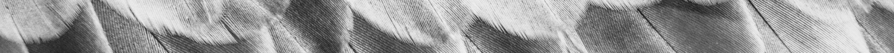
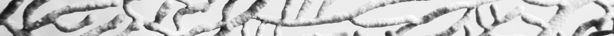

digital product designer
Oakland, CA
I’ve turned my background in natural resources around to create user experiences that thrive “in the wild.”
Digital products are like animals in an ecosystem. I want to know:
Where does the product live?
Who depends on it?
And - let’s get real - the birds with the best looking feathers get the mate, so...
How can I make its design stand out from the flock?
I enjoy creating ditigal products of all kinds, and have fun taking inspiration from nature when I can.

Design process
Here’s a summary of my typical steps.
Research and scoping
- Surveys, interviews, and problem identification
- Competitive analysis
- User personas
- User stories
Information architecture
- User flows
- Sitemapping
- Content strategy
- Sketching and wireframes
- Prototyping
- User testing
Visual design
- Name and logo design
- Style guides
- High-fidelity mockups and prototypes
- Preference testing
- User testing
Development and deployment
- Basic frontend
- Developer deliverables
- Process presentation
- User testing

Work


Ease your writing process
